Ajuste sazonal em cascata: testes, X-11 vs SEATS e os dados brasileiros de crédito
seasonal adjustment
econometrics
credit
x13
tramo-seats
Uma escada de testes para decidir se uma série é sazonal, um scorecard para escolher entre X-11 e TRAMO-SEATS, e o que acontece quando você aplica isso nas 73 séries de concessão de crédito do BCB e tenta remontar os agregados.
Data de Publicação
20 de agosto de 2026
Dessazonalizar uma série temporal parece ser, à primeira vista, um problema macroeconométrico “resolvido”. Você instala o pacote seasonal, RJDemetra ou rjd3toolkit no R (ou equivalentes em Python, EViews, etc.), chama uma função seas()-like, adiciona, se necessário, argumentos de pesos mensais customizados ou de tratamento de outliers específicos, sai uma série mais suave que guarda uma correlação interessante com a série original, e a vida segue. Na prática, contudo, sempre há três decisões implícitas nesse processo:
A série tem sazonalidade? Rodar um filtro sazonal numa série sem sazonalidade não é neutro. Ele pode encontrar padrão onde não há e injetar ruído.
Se existe sazonalidade, qual método utilizar para tratá-la? O software JDemetra+ oferece alguns pipelines completos de ajuste sazonal com filosofias diferentes, como, por exemplo, X-13ARIMA (RegARIMA + X-11) e TRAMO-SEATS (TRAMO + SEATS).
Se a série faz parte de uma hierarquia, você dessazonaliza o agregado ou as partes? Ajuste sazonal não é linear. A soma das partes dessazonalizadas não é a dessazonalização da soma.
Neste post uso o pacote rjd3toolkit versão 3.8.0 no R. Ele serve de interface para o JDemetra+, o software de ajuste sazonal oficialmente recomendado pela Eurostat. Numa versão inicial, escrevi os códigos usando o pacote RJDemetra, porém ele embute o JDemetra+ 2.x (na versão 0.2.8, atual no CRAN, o demetra-tstoolkit-2.2.5.jar). Isso é problemático, pois, como o README do projeto explicita: “JDemetra+ v2 will reach its end of life in December 2026, which coincides with the end of Java 8’s official support”. Escrever hoje uma rotina de produção sobre um runtime com fim de vida marcado para daqui a alguns meses não me parece fazer muito sentido.
Note a existência do script sa_runner.R nesse código. Nele várias rotinas e funções customizadas deste post são geradas. O arquivo está disponível no repositório do blog.
Este post destrincha as três questões acima utilizando um caso concreto: as 73 séries de concessão de crédito nominal publicadas pelo Banco Central do Brasil (“BCB”), de março de 2011 até junho de 2026. Escolhi essas séries por alguns motivos.
Primeiro, pela própria importância delas. Ter um indicador de crédito sazonalmente ajustado confiável é extremamente relevante para mapear o impulso de crédito e seu efeito sobre atividade no Brasil.
Além disso, o próprio BCB publica nos metadados do BCB SGS o procedimento de ajuste sazonal empregado nas séries (texto abaixo). Contudo, diferentemente das séries do IBGE, o órgão não especifica os testes nem os componentes de efeitos de calendário e feriados utilizados (se esses fatores estão publicados em algum lugar, já peço perdão aqui pelo meu equívoco!), abrindo margem para resultados diferentes do oficial e uma possível discussão metodológica.
O método empregado no processo de ajuste sazonal é o X-13 Arima Seats.
Antes de realizar os ajustes sazonais, são realizados testes de detecção de sazonalidade. Quando a sazonalidade não é significante, a série não é ajustada.
Leva-se em conta a estrutura móvel do calendário, chamada efeito calendário. O número de dias úteis de cada mês pode mudar de ano para ano. Além disso, alguns feriados, como o Carnaval, são móveis, podendo cair em dias e meses diferentes de acordo com o ano.
As séries de crédito nominais são dessazonalizadas diretamente (não é adotado o método de dessazonalização das séries componentes para se chegar à série agregada sazonalmente ajustada).
Por último, o BCB publica versão oficial dessazonalizada de alguns agregados, o que dá um gabarito raro para comparação e abre uma oportunidade para vislumbrar como seriam os resultados utilizando um método bottom-up.
O roteiro daqui para frente é o seguinte: monto uma escada de testes de sazonalidade e um scorecard de escolha, e aplico os dois em três séries didáticas para mostrar os resultados diferentes que podem aparecer. Depois, rodo essa rotina inteira nas 73 séries e tento remontar os agregados de duas formas diferentes - a bottom-up e a top-down - comparando com as séries oficiais do BCB onde possível.
Os dados
As concessões são disponibilizadas pelo BCB de diferentes formas: através da planilha divulgada nas Estatísticas monetárias e de crédito ou pelo BCB SGS. Cada modalidade de crédito contém uma série de concessões nominais. A hierarquia vai de Concessões - Total até folhas mais desagregadas, contando com dois grandes pares de subdivisões: PF vs PJ e livre vs direcionado.
Note que no código acima carrego um .txt com os fatores sazonais do IBC-Br que usei como proxy para os fatores de calendário citados pela metodologia do BCB (carnaval, feriados, etc).
séries
início
fim
meses
86
Mar/2011
Jun/2026
184
O post, como fica claro nos snips de código acima, não busca dados ao vivo. carregar_series() lê um snapshot em CSV commitado no repositório, baixado do SGS com o pacote GetBCBData (sempre ele!) na data de escrita deste post. É importante frisar que o exercício inteiro é condicional à amostra, já que são dados que passam por revisões.
Figura 1: As três séries do exemplo, em nível. Nenhuma delas está dessazonalizada aqui.
Vou trabalhar com valores nominais. Primeiro, e mais importante, porque as séries oficiais dessazonalizadas que uso como comparação na última seção são nominais. Segundo, porque deflacionar antes do ajuste sazonal pode contaminar com a sazonalidade do próprio deflator. Terceiro, porque deflacionar depois do ajuste sazonal pode injetar sazonalidade de volta.
Escada da sazonalidade
Degrau 1: olhar para o dado
O primeiro “teste” de sazonalidade é simplesmente observar a dinâmica da série. Muitas vezes já saímos aplicando pacotes e fazendo contas complexas em situações que apenas olhar um simples gráfico já responderia se é necessário de fato fazer tudo isso. O subseries plot é um tipo de gráfico interessante nesse caso. Ele quebra a série por mês do ano: cada painel é um mês, a linha dentro dele percorre os anos em sequência, e a barra horizontal é a média daquele mês. Se há sazonalidade, as barras ficam em alturas visivelmente diferentes.
Aqui, contudo, tenho que tomar alguns cuidados. Não é tão trivial quanto rodar a função ggsubseriesplot(). Como são séries nominais, elas podem possuir uma tendência de crescimento ao longo do tempo que pode dominar o gráfico e esconder a sazonalidade. Para expurgar essa tendência, uso uma média móvel centrada 2x12, um filtro clássico para isolar tendência-ciclo numa série mensal.
A ideia é a seguinte. Qualquer janela de 12 meses consecutivos contém cada mês do calendário exatamente uma vez. Assim, a série da média móvel de 12 meses acaba sendo “cega” para a sazonalidade: a janela tem exatamente o tamanho do período sazonal e mata a sazonalidade por construção. Além disso, ela suaviza a série a ponto de atenuar o componente irregular e captar algo que pode ser interpretado como a tendência-ciclo.
Dessa forma, a razão expressa em desvio percentual entre o valor do mês corrente e o valor da média móvel centrada (ratio-to-moving-average) pode ser interpretada como o desvio em relação à tendência-ciclo. Nela sobra o que seria o efeito sazonal mais o componente irregular. Olhar para a média dessa métrica nos ajuda a entender se a série possui aspectos sazonais ou não.
Contudo, como 12 é um número par, a média não tem um mês como ponto central. Ela cai no meio do caminho entre dois meses. No exemplo da janela jan → dez, entre junho e julho. Ou seja, ela está sempre meio mês adiante do mês ao qual eu gostaria de atribuí-la. A saída é calcular uma segunda janela, deslocada um mês para trás, e tirar a média das duas. Ilustrando:
janela
centro
dez/2019 → nov/2020
entre mai e jun (5.5)
jan/2020 → dez/2020
entre jun e jul (6.5)
média das duas
junho, cravado (6.0)
Daqui vem o nome “média móvel centrada 2x12”. Ela é centrada num mês cheio, e para isso é calculada sobre 2 janelas de 12 meses, uma delas deslocada um mês para trás.
Mostrar código
# Média móvel centrada 2x12: o filtro clássico para isolar tendência-ciclo numa# série mensal. Sem destendenciar, o crescimento da série domina o gráfico e a# sazonalidade some.ma_2x12 <-function(x) {as.numeric(stats::filter(x, c(0.5, rep(1, 11), 0.5) /12, sides =2))}db_sub <- db_ex %>%arrange(codigo, date) %>%mutate(desvio =100* (value /ma_2x12(value) -1), .by = codigo) %>%filter(!is.na(desvio)) %>%mutate(mes =factor(month(date), levels =1:12, labels =c("jan", "fev", "mar", "abr", "mai", "jun", "jul", "ago", "set", "out", "nov", "dez")),ano =year(date) )medias_mes <- db_sub %>%reframe(media =mean(desvio), .by =c(rotulo, mes))ggplot(db_sub, aes(x = ano, y = desvio)) +geom_line(colour =pal_blog("main")[2], linewidth =0.4) +geom_hline(yintercept =0, colour ="lightgray", linewidth =0.3) +geom_segment(data = medias_mes,aes(x =-Inf, xend =Inf, y = media, yend = media),colour =accent_blog("cool"), linewidth =0.7, inherit.aes =FALSE ) +facet_grid(rotulo ~ mes, scales ="free_y", labeller =labeller(rotulo =label_wrap_gen(22))) +labs(title ="Subseries plot: a média de cada mês é diferente das outras?",subtitle ="Desvio % da tendência (média móvel 2x12); linha vinho = média do mês",x =NULL,caption =caption_blog("BCB") ) +theme_blog(base_size =9) +theme(axis.text.x =element_blank(),panel.spacing.x = grid::unit(1, "pt"),strip.text.y =element_text(angle =0, hjust =0) )
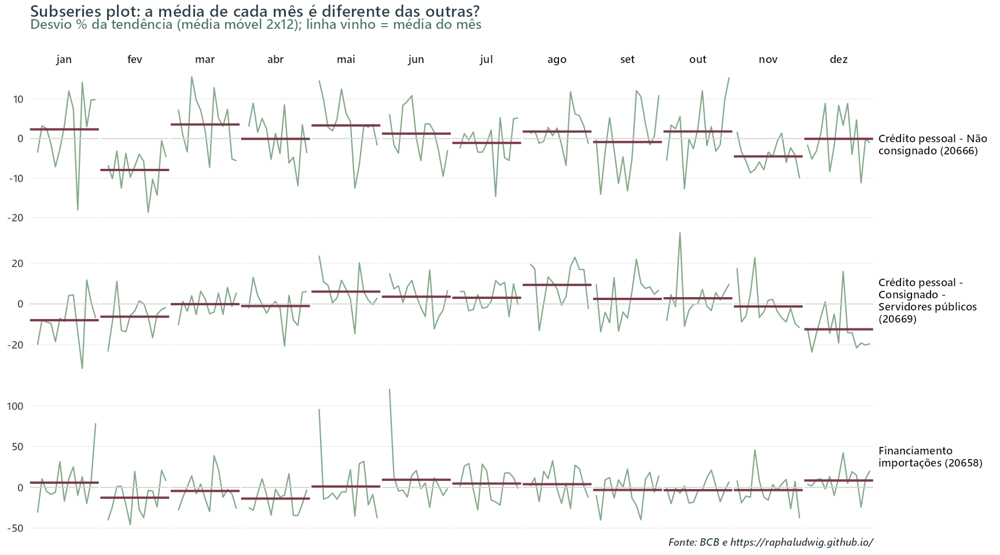
Figura 2: Subseries plot: cada painel é um mês do ano, a linha percorre os anos e a barra é a média do mês. Séries em desvio percentual da tendência (média móvel centrada 2x12), para isolar a sazonalidade do crescimento.
Os dois primeiros painéis parecem ter um padrão sazonal, enquanto o terceiro parece não ter. No crédito pessoal não consignado as barras vinho desenham um perfil com fevereiro claramente abaixo da tendência e março e maio acima, com amplitude de 11.5 p.p. entre o menor e o maior mês. No consignado a servidores públicos a amplitude é ainda maior, 21.7 p.p.: janeiro, fevereiro, novembro e dezembro abaixo, maio a outubro acima. Repare que a segunda série tem o padrão sazonal mais amplo das duas.
Por mais que ajude, olhar os gráficos muitas vezes não é evidência conclusiva. Sinceramente, diria até que nos três casos acima não é. Os próximos passos ajudam a dar robustez à decisão de usar o filtro sazonal ou não.
Degrau 2: a autocorrelação nos lags sazonais
O subseries plot é sugestivo, mas subjetivo. O passo natural é procurar alguma estatística que indique a existência de sazonalidade de forma mais robusta. Uma ideia é olhar a autocorrelação serial. Se a série é mensal e sazonal, a correlação nos lags 12, 24 e 36 deveria se destacar dos lags vizinhos.
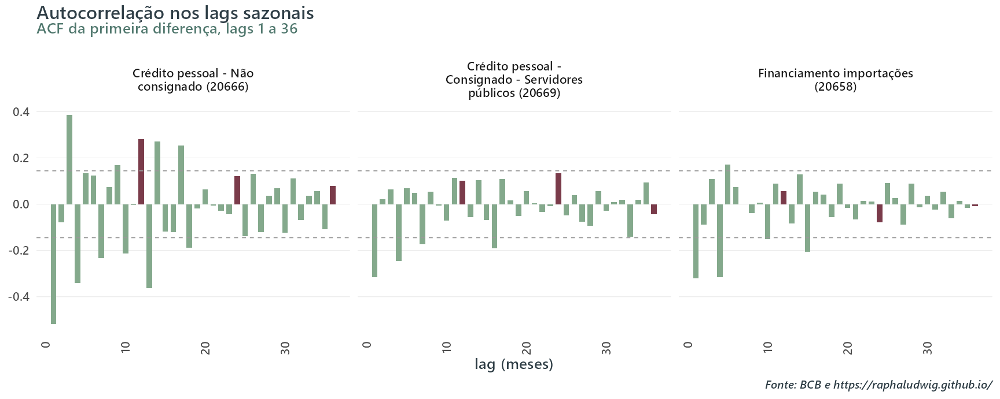
Figura 3: Autocorrelação da primeira diferença. As barras vinho são os lags sazonais (12, 24, 36); as linhas tracejadas são a banda de significância a 5%.
O resultado também é decepcionante. A banda de 5% está em ±0.14. No consignado a servidores públicos, uma das séries cujo subseries plot parece indicar um padrão sazonal, os três lags 12, 24 e 36 ficam dentro da banda (0.10, 0.13 e -0.04). No crédito pessoal não consignado o lag 12 fura (0.28), mas o 24 e 36 não. Entre esses exemplos, nem na série de sazonalidade mais limpa do passo anterior todos os lags “sazonais” se destacam dos vizinhos.
Degrau 3: os testes clássicos
Agora os testes propriamente ditos. Uso três, e eles atacam o problema por ângulos diferentes:
QS: é uma espécie de Ljung-Box especializado em sazonalidade. Ele é restrito a determinados lags (12 e 24) e unilateral. O racional é o que se espera de sazonalidade: se dezembro é alto, o dezembro seguinte também deve ser, então a correlação entre observações doze meses distantes tem que ter sinal positivo. \(H_0\) é não haver sazonalidade ou, mais precisamente, que a autocorrelação avaliada não é positiva ou não é estatisticamente diferente de zero. Assim, rejeitar \(H_0\) a um determinado nível de significância é uma evidência de sazonalidade.
Kruskal-Wallis: teste não-paramétrico (não trabalha diretamente com os valores da série e, sim, transforma as observações em ranks) que tenta responder à pergunta: “o janeiro típico é diferente do junho típico?”. O procedimento consiste em separar todas as observações em grupos determinados, nesse caso, pelos respectivos meses. Assim, as observações de janeiro vão num grupo, as de fevereiro em outro, e assim por diante. A \(H_0\) do teste é que os doze grupos vêm da mesma distribuição. Portanto, basta que ao menos um mês apresente distribuição sistematicamente diferente para rejeitar a \(H_0\) (a um determinado nível de significância) e gerar evidência de sazonalidade.
Diferentemente do QS, o KW não exige que janeiro deste ano seja particularmente semelhante ao janeiro do ano passado; ele verifica se, quando considerados em conjunto, os janeiros tendem a ocupar rankings diferentes dos demais meses. Assim, alguma variação moderada na ordenação dos meses entre os anos ainda é compatível com a rejeição.
Friedman: teste também não-paramétrico que trata cada ano como um bloco e compara os meses dentro dele. Ele tenta responder à pergunta “dentro de cada ano, certos meses tendem sistematicamente a ficar acima ou abaixo dos demais?” testando se o ranking dos meses dentro do ano se repete consistentemente nos dados. A \(H_0\) do teste é que não há diferença sistemática entre os meses, i.e., sob \(H_0\) determinado mês não deveria tender a ser mais alto ou mais baixo que os outros.
Como no KW, só a ordem entra na conta, não a magnitude. Um dezembro 30% acima da média e um dezembro 3% acima contam igual, desde que dezembro seja consistentemente o maior do seu ano. A principal diferença entre eles é que KW compara os rankings globais dos grupos (todos os janeiros vs todos os fevereiros vs …), enquanto Friedman primeiro rankeia dentro dos anos e depois verifica se esse ranking é um padrão recorrente.
Para esses testes vou usar o pacote seastests (por opção, eles também estão implementados no rjd3toolkit). As funções rodam por default sobre a série diferenciada (diff = TRUE), não sobre o nível. Os três testam sazonalidade estável, ou seja, um padrão que se repete. Nenhum deles detecta sazonalidade que muda de forma ao longo do tempo.
Mostrar código
# Reproduzido de R/sa_runner.R, que é quem de fato roda no post.testes_sazonalidade <-function(x) { p <-function(f) tryCatch(as.numeric(f(x)$Pval), error =function(e) NA_real_)tibble(qs_p =p(seastests::qs), # Ljung-Box nos lags sazonaisfried_p =p(seastests::fried), # Friedmankw_p =p(seastests::kw), # Kruskal-Walliswo =tryCatch(seastests::isSeasonal(x, test ="wo"), error =function(e) NA),seasdum_p =p(seastests::seasdum) # Wald sobre dummies mensais: sazonalidade determinística )}
Uma nota de leitura antes de olhar os números: a função calcula cinco colunas, não três. As três primeiras são os testes deste degrau; as duas últimas - dummies sazonais (seasdum) e WO - respondem à pergunta do degrau 4 e estão explicadas lá.
Repare no que acontece na segunda linha, o consignado a servidores públicos. O QS dá 0.051, não rejeitando a 5% por muito pouco. Como o QS e a ACF olham para o mesmo objeto, não é coincidência que os dois deixem de apontar sazonalidade. Se uma rotina de produção usa o QS como porteiro único, essa série passa direto, sem ajuste. Friedman e Kruskal-Wallis, por sua vez, rejeitam com p-valores duas a três ordens de grandeza menores, e o veredito combinado de Webel-Ollech diz que é sazonal (exploro esse teste mais adiante). É uma série sazonal que o teste mais popular deixa passar.
E a terceira linha mostra um caso ainda mais desconfortável. QS não rejeita nada (1), mas Friedman (0.024) e Kruskal-Wallis (0.01) rejeitam a 5%. Os testes discordam de verdade. O próximo degrau ajuda a chegar numa conclusão.
Degrau 4: que tipo de sazonalidade?
Os três testes anteriores respondem “há sazonalidade?”. O degrau 4 responde uma pergunta diferente: a sazonalidade existe, podendo ela ser determinística ou estocástica?
Sazonalidade determinística é um padrão fixo ao longo do tempo. Um conjunto de dummies mensais numa regressão resolve.
Sazonalidade estocástica é um padrão que tem dinâmica própria e pode evoluir, i.e., choques ao padrão sazonal podem alterá-lo de forma persistente.
Para avaliar o tipo de sazonalidade, vamos retomar o teste da tabela ainda não explicado:
seasdum: a coluna “dummies sazonais” da tabela acima. A ideia é modelar a sazonalidade determinística de forma explícita através de dummies de mês. A especificação utilizada é de um ARIMA(0,1,1) não sazonal com tendência linear e onze dummies mensais como regressores externos, que são testados conjuntamente por uma estatística de Wald (o argumento autoarima pode ser ativado; aqui não fez diferença).
A \(H_0\) é que os coeficientes das onze dummies são conjuntamente nulos. Portanto, rejeitar fornece evidência de que existe um perfil sazonal mensal determinístico. Não rejeitar, por outro lado, não permite concluir que ele não existe e tampouco exclui outras formas de sazonalidade, como uma sazonalidade estocástica ou variante no tempo.
Para quem quiser ir além, um teste adicional é o OCSB (Osborn, Chui, Smith e Birchenhall), disponível como seastests::ocsb(). É um Dickey-Fuller montado para a frequência sazonal, e ataca a mesma pergunta pelo lado da raiz unitária: a hipótese nula é que a raiz unitária sazonal existe, ou seja, que o padrão sazonal é estocástico e precisa de diferenciação sazonal para ficar estacionário. Rejeitar, portanto, é evidência de que o padrão é estável. Cheguei a rodá-lo em todas as séries deste post e ele acabou ficando de fora por não acrescentar nada.
Já o procedimento de Webel & Ollech responde a outra pergunta. Não a de qual tipo de sazonalidade está presente, mas a de se, no fim das contas, a série deve ou não ser tratada como sazonal.
WO: o veredito de Webel & Ollech é mais um procedimento de classificação de sazonalidade que um teste. Ele tenta responder se, no conjunto de evidências disponível, devo classificar uma série como sazonal ou não (overall seasonality test na documentação do seastests). Ao contrário do seasdum, ele não devolve p-valor, e sim um TRUE/FALSE. É uma regra de decisão, calibrada para ser conservadora, que busca resolver o caso em que os testes individuais brigam entre si. TRUE = sazonal; FALSE = não.
Ele usa três estatísticas. Primeiro, é calculado o p-valor de um teste QS convencional na primeira diferença da série. Em seguida, ajusta-se um ARIMA não sazonal via autoarima, captam-se os resíduos e são feitos dois testes, QS e KW, sobre eles (\(QS_r\) e \(KW_r\)). O teste devolve TRUE se algum dos 3 casos abaixo acontecer:
Somando os quatro degraus, o veredito para as três séries é:
Crédito pessoal não consignado: sazonal, todos os testes concordam, componente determinístico forte. Caso fácil.
Consignado servidores públicos: sazonal, mas o QS quase não vê. Caso onde a escada ganha do teste único.
Financiamento a importações: os testes discordam entre si e o WO diz que não. Caso onde a resposta certa é provavelmente não dessazonalizar.
O veredito
Os quatro degraus acima são o que eu recomendo rodar para entender uma série, mas nenhum deles é quem dá o veredito sobre a existência de sazonalidade neste exercício. Quem dá é um último teste, o teste combinado que sai do próprio X-13.
Ele está documentado em Ladiray & Quenneville e é particularmente relevante, porque opera sobre o componente \(SI\), i.e., a série já limpa de tendência, de outliers e de efeitos de calendário, produzida pela própria decomposição X-11. Além de avaliar a presença de sazonalidade estável, ele aponta e penaliza explicitamente a existência de sazonalidade móvel. Assim como o WO, o resultado é uma classificação, e não um p-valor, com três níveis: Present, ProbablyNone, None.
Dessa forma, ele já está acoplado ao pipeline que é utilizado neste exercício e, por isso, o seu emprego como teste principal neste post.
Uma ressalva é que a limpeza que o torna atraente é feita pelo mesmo motor cujo resultado ele avalia: \(SI\) sai da decomposição X-11 daquela série. Ele é, portanto, um diagnóstico condicional a esse pré-ajuste, e não um veredito externo. É justamente por isso que mantive a escada do seastests aqui, pois ela é o voto que não depende do motor que faz o ajuste.
Ainda assim, nas três séries de exemplo os dois caminhos chegam ao mesmo lugar (Present, Present e None, na ordem acima).
X-13 vs TRAMO-SEATS: X-11 vs SEATS
Ambos os métodos são compostos por duas etapas:
Pré-ajuste: no X-13, o pré-ajuste é feito pelo procedimento RegARIMA do Census Bureau. No TRAMO-SEATS, pelo TRAMO (Time series Regression with ARIMA noise, Missing observations and Outliers, do Banco de España). Ambos usam uma estrutura de regressão com erros ARIMA e contam com estruturas “prontas” para testar transformações log/nível, estimar efeitos de calendário e feriados, tratar missing values, e estimar outliers, entre outros procedimentos. A diferença entre eles está nas regras e algoritmos usados na tomada dessas decisões.
Também estendem a série com previsões para os filtros terem o que mastigar nas pontas, o que mitiga o problema de borda.
Decomposição: aqui os métodos divergem de verdade. O X-11 (no X-13) usa uma sequência iterativa de médias móveis e regras de tratamento de extremos, cujas famílias de filtros e critérios de seleção foram desenvolvidos e aperfeiçoados pelo Census Bureau. O SEATS (no TRAMO-SEATS) parte do modelo ARIMA estimado no pré-ajuste, decompõe esse modelo em modelos ARIMA para tendência, sazonalidade, componente transitório e irregular e, a partir dessa decomposição, deriva filtros ótimos de extração de sinal.
Para ilustrar melhor:
X-11: Após o pré-ajuste, o algoritmo usa uma média móvel centrada 2x12 para obter uma primeira estimativa da tendência. Retirada essa tendência, organiza o componente sazonal-irregular em subgrupos de cada mês e aplica médias móveis ao longo dos anos, i.e., nos vizinhos próximos de mesmo mês. Essa média suavizada é tratada como fator sazonal. Em seguida, esse processo é replicado iterativamente aplicando um filtro Henderson para melhorar a estimativa da tendência e refazendo o processo do fator sazonal.
Decompondo uma série temporal em \(x_t = T_t + S_t + I_t\) (tendência + sazonalidade + irregular), posso dizer que o X-11 faz um processo iterativo de dados → médias móveis → T, S, I. Não existe primeiro uma distribuição probabilística dizendo como \(T_t\) ou \(S_t\) evoluem. Ele é filter-based.
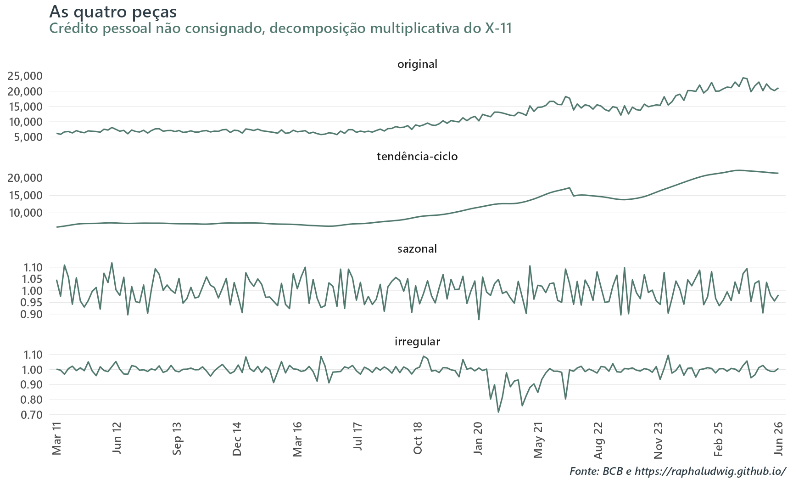
Figura 4: Decomposição do X-11 (via RegARIMA) para crédito pessoal não consignado: série original, tendência-ciclo, componente sazonal e irregular.
SEATS: Após o pré-ajuste, o algoritmo parte do modelo com erros ARIMA para a série linearizada e procura representá-la como a soma dos componentes não observados \(T_t\) (tendência), \(S_t\) (sazonalidade) e \(I_t\) (irregular, e eventualmente um transitório), cada um com sua própria dinâmica ARIMA. Como se tivesse um ARIMA “grande” da série e o SEATS encontrasse ARIMAs específicos para os componentes.
Conhecidos os modelos probabilísticos dos componentes, ainda é necessário estimar seus valores, pois \(T_t\), \(S_t\) e \(I_t\) não são diretamente observados. O SEATS utiliza para isso filtros de Wiener–Kolmogorov (bilaterais, também fazem uso dos forecasts/backcasts da série) que, de alguma forma, podem ser entendidos como médias ponderadas das observações. Contudo, diferentemente do X-11, seus pesos não pertencem a uma família pré-definida. Eles são implicados pelo modelo ARIMA da série e pela decomposição desse modelo nos componentes (model-based).
A decomposição SEATS é diretamente condicionada à especificação ARIMA vinda do pré-ajuste / TRAMO. Já a decomposição X-11 é menos dependente dela, embora o RegARIMA continue obviamente importante.
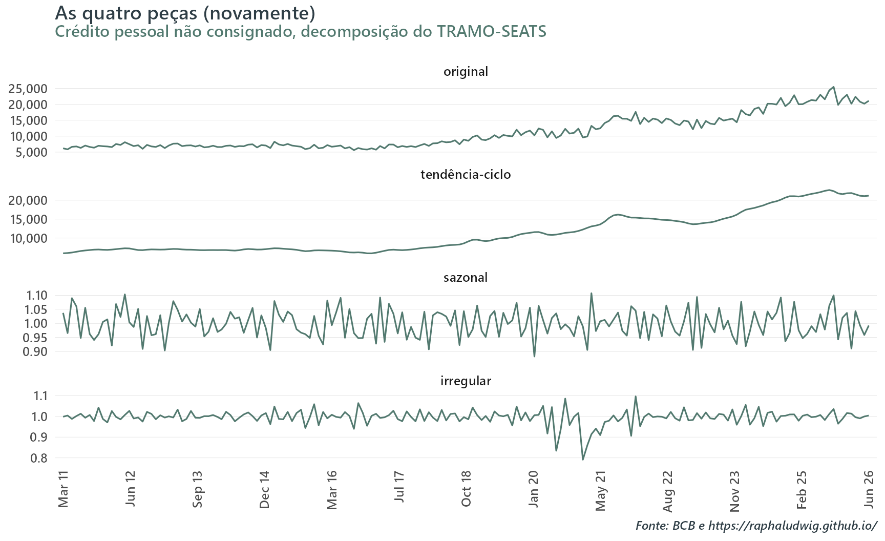
Figura 5: Decomposição do TRAMO-SEATS para crédito pessoal não consignado: série original, tendência-ciclo, componente sazonal e irregular.
De onde vêm esses nomes
Vale abrir um parêntese sobre a nomenclatura, porque a sequência X-11 → X-12 → X-13 sugere uma coisa que ela não é. Esses números são versão de programa, não método novo:
Marco
Ano
O que acrescentou
Census Method I
1954
primeiro programa computadorizado de dessazonalização do Census Bureau
combina o X-12ARIMA com o módulo SEATS no mesmo software
O X-11 de 1965 é o único que introduz um algoritmo de decomposição, e ele continua sendo usado dentro do X-12 e do X-13. O que o X-11ARIMA e o X-12ARIMA fizeram foi embrulhar esse mesmo algoritmo num pré-ajuste cada vez melhor. E o X-13 não trocou nada: ele acrescentou uma segunda decomposição ao lado da primeira, o SEATS, que vem de outra linhagem inteira, o programa TRAMO-SEATS de Gómez & Maravall.
Daí a arrumação do JDemetra+ fazer mais sentido do que parece à primeira vista. O JDemetra+ separa por linhagem, enquanto o Census empacotou os dois num binário só e deu a ele o nome da versão seguinte.
A família rjd3 reparte os dois módulos entre dois pacotes: rjd3x13::x13_spec() devolve $regarima + $x11, sem opção de decomposição SEATS; e rjd3tramoseats::tramoseats_spec() devolve o $seats.
Os fatores de calendário
Antes de comparar os métodos, um ingrediente que muda o resultado mais do que a escolha entre eles: efeitos ou fatores de calendário. Por exemplo, fevereiro tem 28 dias, dezembro tem 31, Carnaval anda pelo calendário, e o número de dias úteis num mês varia de 18 a 23. Nada disso é sazonalidade, mas contamina a estimativa sazonal.
O JDemetra+ tem algumas specs prontas para pré-processamento. Elas são indexadas por rsa e vão desde rsa0 até rsa5c.
spec
log
ARIMA
Outliers
Dias úteis
Páscoa
rsa0
fixa nível
fixo
-
-
-
rsa1
testa
fixo
AO/LS/TC
-
-
rsa2
testa
fixo
AO/LS/TC
TD2 + bissexto
sim
rsa3
testa
auto
AO/LS/TC
-
-
rsa4
testa
auto
AO/LS/TC
TD2 + bissexto
sim
rsa5c
testa
auto
AO/LS/TC
TD7 + bissexto
sim
Neste exercício, quero usar o arranjo TD7, i.e., seis regressores de segunda a sábado, mais correção de ano bissexto (vs TD2 que distingue apenas dia útil de final de semana) para tratar dias úteis. Uma saída é usar a specrsa5c, a única que usa esse arranjo. Contudo, como já mencionado no começo do post, faço uma pequena mudança. Em vez de usar o TD7 nativo, substituo pela spec do IBC-Br que mapeia exatamente o TD7, porém capturando os feriados (móveis) nacionais. Na ótica do Brasil, ele é construído com o calendário “certo” em vez do calendário genérico do JDemetra+.
Como esses fatores precisam entrar no lugar do tratamento de calendário padrão do JDemetra+, não ao lado dele, o argumento option dentro de set_tradingdays(...) recebe “UserDefined” e defino os fatores do IBC-Br exogenamente. Além disso, test fica como “None” para que nenhum teste automático do algoritmo escolha dropar esses fatores. Por causa dessa substituição, a escolha pela spec rsa5c nessa função poderia até ser trocada por rsa4 sem alterar resultados. Usar outra, contudo, já afeta os resultados porque ainda estou herdando os fatores de ano bissexto e Páscoa (teste e possível adição) das specsrsa5c e rsa4.
Mostrar código
# Reproduzido de R/sa_runner.R, que é quem de fato roda no post.# Os itens do dicionário precisam ser pedidos por# chave, na chamada, e é isso que faz `fit$user_defined` existir.ITENS_DIC <-c("diagnostics.seas-si-combined", # teste combinado sobre as razões SI"diagnostics.seas-sa-combined3"# o mesmo, restrito aos últimos 3 anos)spec_x13 <-function(fatores) { rjd3toolkit::set_tradingdays( rjd3x13::x13_spec("rsa5c"),# Os seis fatores do IBC-Br entram NO LUGAR do bloco de dias úteis do# próprio JDemetra+, não empilhados sobre ele.option ="UserDefined",uservariable = fatores$uservars,test ="None" )}ajustar_x13 <-function(x, fatores) { rjd3x13::x13(x, spec_x13(fatores), context = fatores$context, userdefined = ITENS_DIC)}
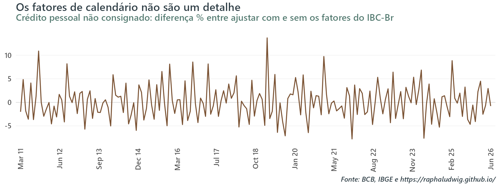
Figura 6: Efeito de modelar calendário: diferença entre a série ajustada com os fatores do IBC-Br e a ajustada sem tratamento de calendário nenhum (RSA3), em % da série ajustada.
A diferença entre modelar e não modelar calendário (usar rsa3 sem a spec do IBC-Br) chega a 13.7 p.p. num mês isolado, e o desvio-padrão dessa diferença é 3.71 p.p..
E há um efeito ainda mais forte que só aparece olhando o conjunto. Comparando o veredito do teste combinado do X-13 sem nenhum regressor de calendário contra o veredito com, 6 das 73 séries passam de não-sazonais para Present, contra 0 no caminho inverso. Modelar calendário não apaga sazonalidade; ele revela a sazonalidade que o ruído de dias úteis, entre outros efeitos, estava mascarando.
Scorecard: como escolher entre X-11 e SEATS
Infelizmente, não existe teste formal aceito que arbitre entre X-11 e SEATS. As M-statistics do X-11 diagnosticam a qualidade da decomposição do X-11, e não têm análogo no SEATS. Cada M mede um sintoma diferente de decomposição malfeita, como \(I\) grande demais em relação a \(T\) ou \(S\) instável de ano para ano. Já os diagnósticos do SEATS pressupõem o modelo escolhido no algoritmo. Não há estatística de teste com distribuição conhecida sob a \(H_0\) “os dois métodos são equivalentes”.
O que existe é diagnóstico comparativo. Neste post, emprego a hierarquia de critérios abaixo:
Mostrar código
# Reproduzido de R/sa_runner.R, que é quem de fato roda no post. Deixar este# chunk avaliar sombrearia a função do runner sem sombrear `razao_metodo()`,# e as colunas "escolha" e "razão" da tabela passariam a discordar.escolher_metodo <-function(combined, dx13, dseats, qx11, limiar =0.05) { falha <-function(p) !is.na(p) && p < limiar# O recorte de 3 anos é categórico, não p-valor: `Present` = sobrou# sazonalidade nos últimos 3 anos = o método falhou ali. falha3 <-function(v) !is.na(v) && v =="Present"case_when(# 1. Não há sazonalidade identificável -> não ajusta nada combined %in%c("None", "ProbablyNone") ~"nenhum",# 2. Os dois deixam sazonalidade residual -> nenhum servefalha(dx13$qs_sa) &falha(dseats$qs_sa) ~"nenhum",# 3. Só um deixa sazonalidade residual -> o outro ganhafalha(dseats$qs_sa) &!falha(dx13$qs_sa) ~"x11",falha(dx13$qs_sa) &!falha(dseats$qs_sa) ~"seats",# 4. Mesmo critério, restrito aos últimos 3 anos, pelo veredito do motorfalha3(dseats$combined3) &!falha3(dx13$combined3) ~"x11",falha3(dx13$combined3) &!falha3(dseats$combined3) ~"seats",# 5. Decomposição X-11 fraca (Q > 1) -> vai de SEATS!is.na(qx11$Q) & qx11$Q >1~"seats",# 6. Empate -> X-11, por ser o mais robusto a ARIMA ruim.default ="x11" )}
No rjd3toolkit esse mesmo teste existe solto, como seasonality_combined(), sem precisar rodar um ajuste inteiro para obtê-lo como faço aqui. Eu o leio do objeto ajustado porque preciso do ajuste para os outros critérios de qualquer forma, mas quem quiser só o veredito não precisa pagar esse preço.
A ordem tem uma lógica. Sazonalidade residual é o pecado capital de um ajuste sazonal. Se sobrou padrão sazonal na série, nenhuma outra qualidade do ajuste compensa. Por isso os critérios 2 a 4 vêm antes de qualquer medida de qualidade. Só depois entra o Q do X-11, e o desempate final vai para o X-11 pelo argumento da robustez.
O Q é a nota de qualidade da decomposição do X-11, uma média ponderada das M-statistics que mencionei acima. O Q herda uma escala: abaixo de 1 a decomposição é considerada aceitável, acima de 1 ela é suspeita. É por isso que o critério 5 é Q > 1.
O critério 1 vem do teste combinado do X-13, o último teste que apresentei na escada. É ele, e só ele, que age como porteiro do padrão sazonal e, portanto, permite à série temporal entrar na disputa entre os dois métodos.
O motor JDemetra+ não usa o resultado do teste combinado como porteiro. Ele ajusta e entrega qualquer série, None inclusive. Os diagnósticos são post-hoc, relatórios sobre um ajuste que já aconteceu, e não pré-condições para que ele aconteça. Sem sazonalidade estável não há padrão para o filtro extrair, então o que ele acaba removendo é ruído, inventando um perfil sazonal que não existia. O freio tem que vir ex-ante do próprio código.
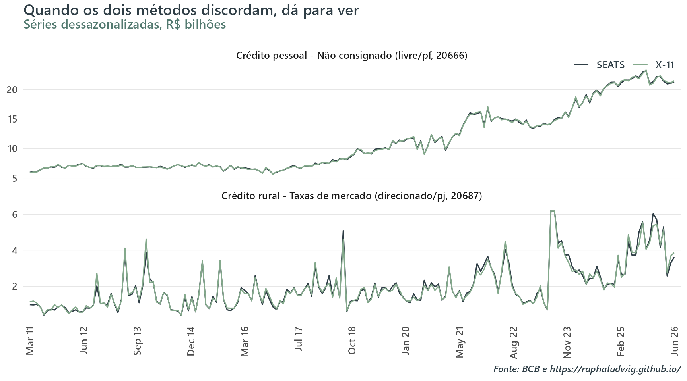
Figura 7: X-11 e SEATS lado a lado. Em cima, uma série onde empatam; embaixo, aquela em que os dois métodos mais divergem no lote inteiro. O painel de baixo está truncado em R$ 6.2 bi para dar zoom: o pico de jul-ago/2023 sai da escala.
No painel de cima as duas linhas se sobrepõem. X-11 e SEATS entregam praticamente a mesma série. A maior diferença entre elas em qualquer mês da amostra é de 2.9%, e a escolha entre os dois métodos é indiferente. No de baixo, não. As duas linhas discordam de forma um pouco mais visível em vários pontos do tempo.
As colunas QS medem sazonalidade residual na série já após o filtro, e, consequentemente, a convenção se inverte em relação à tabela do degrau 3. Lá, p-valor baixo era o sinal que se procurava (série crua). Aqui, p-valor baixo é o problema, evidência de que sobrou padrão sazonal no que deveria estar limpo (resíduo). As colunas 3a respondem à mesma pergunta restrita aos últimos três anos, mas em outra moeda: ali o JDemetra+ não publica p-valor, só um veredito, e Present é o valor ruim.
Nas duas primeiras séries os diagnósticos empatam. Nenhum dos dois métodos deixa sazonalidade residual e Q < 1, e a escolha cai no critério 6, X-11 por robustez. A terceira nem chega a essa disputa, porque o critério 1 a exclui antes, com o teste combinado dizendo None. A quarta é a única das quatro que não termina no X-11. No crédito rural a taxas de mercado, nenhum dos dois métodos deixa sazonalidade residual pelo QS, então os critérios 2 a 4 não têm o que separar. Quem decide é o Q: a decomposição do X-11 sai com 1.39, acima da linha de corte, e o critério 5 manda a série para o SEATS.
Aplicando em lote
A rotina inteira vira uma função, ajustar_serie(), que devolve duas coisas: a série ajustada e uma linha de status dizendo o que foi testado, o que foi decidido e por quê.
Os cinco testes do seastests, os degraus 3 e 4, são calculados para todas as séries e viajam junto no relatório, mas não entram na decisão. escolher_metodo() recebe apenas o veredito do teste combinado, os diagnósticos de sazonalidade residual e o Q do X-11. Os degraus ficam ali como registro para quando uma série chamar atenção.
Figura 8: Veredito do teste combinado do X-13 nas 73 séries de concessão, por tipo de recurso.
Das 60 séries com sazonalidade identificável, o X-11 deixa sazonalidade residual em 2 e o SEATS em 4 (falhas no QS da série ajustada). Nas 2 em que os dois falham, o scorecard não escolhe nenhum. A série sai sem ajuste e é marcada como nenhum_metodo_valido.
As 7 escolhas por SEATS vieram da regra Q > 1, decomposição X-11 fraca, que é a última antes do desempate. Nenhuma veio de sazonalidade residual. Os critérios 2 a 4, que são os que tratam do pecado capital, decidiram o destino de apenas 4 séries do lote inteiro. Em 2 o veredito foi contra o SEATS e a escolha caiu no X-11, em nenhuma contra o X-11, e nas outras 2 nenhum dos dois serviu.
Cabe registrar que o critério 4 não fez nada aqui, e por um motivo que vale mais do que ele teria valido se tivesse decidido alguma coisa. Ele lê o veredito do JDemetra+ para os últimos três anos (seas-sa-combined3), e esse veredito voltou None em 73 das 73 séries, nos dois motores. Ou seja, nenhum dos dois métodos deixou sazonalidade residual na janela recente em série nenhuma. O critério fica na hierarquia porque é justamente ali que a sazonalidade residual costuma aparecer primeiro quando aparece, e um lote de 73 séries sem nenhuma ocorrência é resultado, não ausência de teste.
Os dois métodos removem sazonalidade igualmente bem quase sempre. O que os separa, quando algo separa, é a qualidade da decomposição, não a eficácia. É por isso que o scorecard acaba não sendo um otimizador e, sim, um detector de exceção. Se você rodasse X-11 em todas que tiveram sazonalidade acusada pelo teste combinado, o ajuste sairia aceitável em 58 das 60.
Oficial, bottom-up e top-down
Chegamos à pergunta prática. Para um agregado como Concessões - Total, há três formas de obter uma série dessazonalizada:
Oficial: a série que o próprio BCB publica já ajustada.
Top-down: pegar o agregado publicado (não ajustado) e rodar a rotina nele.
Bottom-up: dessazonalizar cada folha e somar.
Se eu não tiver acesso às oficiais, qual usar?
Ajuste sazonal não é uma operação linear, então as três dão resultados diferentes por construção.
Figura 9: Concessões totais: as três versões dessazonalizadas em nível. Praticamente indistinguíveis.
Em nível é difícil ver diferença. Entretanto, ninguém lê conjuntura no nível, lê na variação mensal.
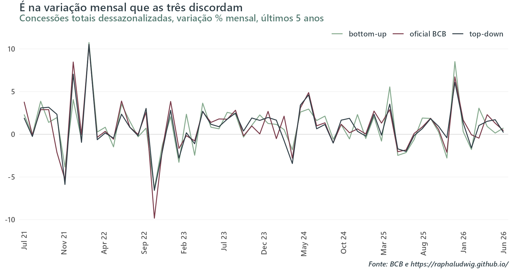
Figura 10: A mesma comparação, em variação mensal. Aqui as três versões deixam de ser indistinguíveis.
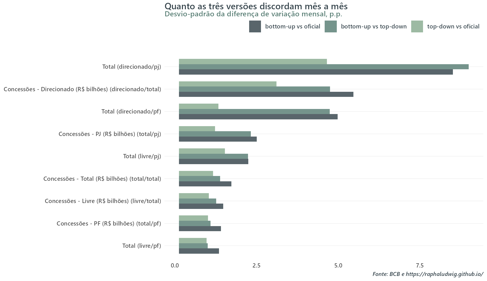
Figura 11: Discordância na variação mensal entre as três versões, por agregado: desvio-padrão da diferença de MoM contra a série oficial do BCB.
Uma ressalva sobre uma das barras. Em Concessões - Direcionado PJ a soma dos filhos publicados difere do agregado publicado em -0.51% já na série crua, provavelmente porque falta uma modalidade que o BCB agrega ali e não publica separadamente. O bottom-up dessa série carrega, então, um erro de nível que não tem nada a ver com ajuste sazonal.
O método top-down, mesmo na comparação da variação mensal, se aproxima bastante das séries oficiais do BCB. Isso parece indicar que, mesmo sendo uma proxy, os efeitos de calendário do IBC-Br cumprem de forma satisfatória seu papel de aproximar o tratamento que o BCB concede. O bottom-up, por sua vez, desvia um tanto mais das séries oficiais. Volto a esse ponto mais à frente.
Olhar apenas para os grandes agregados, contudo, tem um limite. Num total que soma quinze ou vinte modalidades, um perfil sazonal que eu errei para mais em uma pode ser cancelado por outro que errei para menos em outra, e a soma bate mesmo com as partes tortas. Posso “testar” esse cancelamento. O BCB publica séries desagregadas com versão oficial dessazonalizada, o que possibilita rodar a rotina top-down nas séries desagregadas e confrontar com o gabarito.
Aqui, me debruço sobre quatro séries: capital de giro total (PJ/livre), total não rotativo (PF/livre), aquisição de veículos (PF/livre) e cartão de crédito à vista (PF/livre). Algumas dessas também são agregados, o que possibilitaria o bottom-up, mas foco aqui apenas no top-down. A escada de testes e o scorecard são aplicados diretamente às séries publicadas.
Figura 12: Capital de giro total (PJ, livre): o top-down contra o gabarito do BCB.
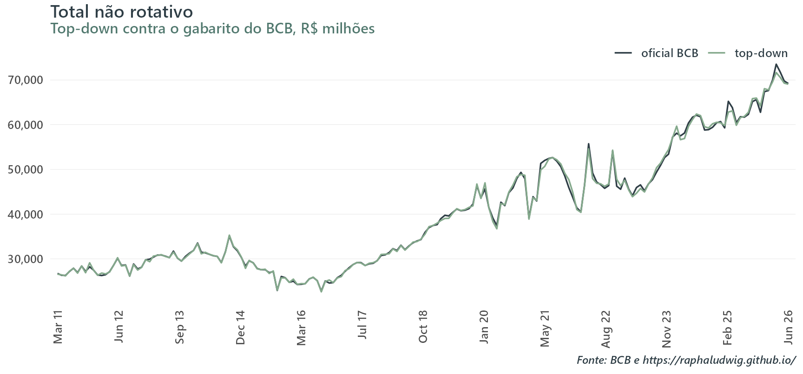
Figura 13: Total não rotativo (PF, livre): o top-down contra o gabarito do BCB.
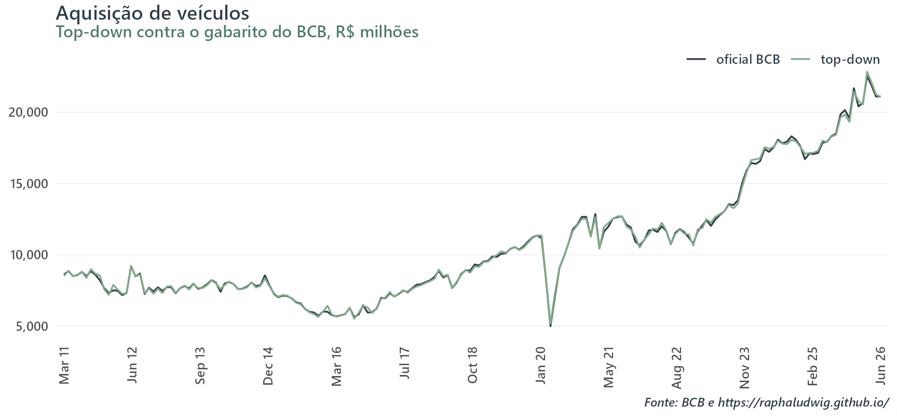
Figura 14: Aquisição de veículos (PF, livre): o top-down contra o gabarito do BCB.
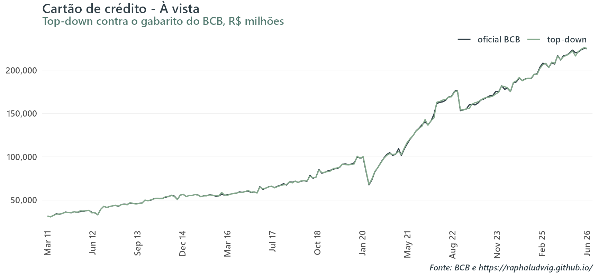
Figura 15: Cartão de crédito à vista (PF, livre): o top-down contra o gabarito do BCB.
Tabela 4
SGS
modalidade
corr. nível
corr. MoM
dp da dif. MoM (p.p.)
20642
Capital de giro - Total
0.999
0.986
2.401
20663
Total não rotativo
0.999
0.967
1.361
20673
Aquisição de veículos
0.999
0.969
1.798
20681
Cartão de crédito - À vista
1.000
0.959
1.200
A rotina vai muito bem no nível desagregado. A pior das quatro correlações de nível é 0.999, e a pior de variação mensal, 0.959. O desvio-padrão da diferença de variação mensal contra o gabarito tem mediana de 1.58 p.p. aqui, contra 1.10 p.p. nos 9 agregados da seção anterior.
Lembrando que os metadados do BCB dizem que “o método empregado é o X-13 Arima Seats”, sem cravar qual decomposição foi usada, X-11 ou SEATS. Também não diz se o software é o do Census ou o JDemetra+, que dão resultados próximos mas não idênticos.
Essa tabela joga luz num argumento interessante. Se a minha rotina reproduz de perto o ajuste oficial nas quatro séries desagregadas em que dá para comparar, há motivo para confiar nela nas outras 69, onde não há gabarito nenhum. Porém, como demonstrado nos resultados do bottom-up, o melhor caminho (sendo o objetivo replicar as séries oficiais) parece ser o top-down.
Isso parece um paradoxo, mas há algumas razões. Um filtro sazonal não satisfaz uma espécie de propriedade de aditividade (como já falado antes), não tenho acesso aos pesos oficiais dos fatores de calendário usados e também não sei exatamente qual procedimento e que software o BCB usa. Ademais, acredito que pode haver outra explicação mais interessante para esse fenômeno do descasamento entre bottom-up e top-down.
É razoável pensar que o BCB divulgue a maior parte das séries em que realiza ajuste sazonal, se não todas, por accountability e pela natureza das regras de insulamento burocrático a que está submetido. Assim sendo, é bem possível que o meu scorecard decida dessazonalizar séries que o BCB, por motivos técnicos ou ad-hoc, escolheu não mexer, nascendo aí uma fonte de divergência grande que é carregada para cima no bottom-up.
Dito isso tudo, para finalizar, termino o exercício com alguma convicção de que a escada que construí funciona e que consigo tanto aproximar as séries de concessões das oficiais quanto gerar ajustes confiáveis onde não há contrapartida oficial.
O que eu levo daqui
Teste antes de ajustar, e com mais de um teste. O QS sozinho, que é o porteiro padrão da maioria das rotinas, deixou passar uma série claramente sazonal e não flagrou o desacordo na série provavelmente não-sazonal. Uma escada de testes como a que montei custa milissegundos e mostra, série a série, quando os testes discordam e por quê. Sem ela você não sabe quais dos seus vereditos são apertados.
A escolha entre X-11 e SEATS importa menos do que se supõe, e é por isso que vale testar. Nas 60 séries sazonais, o X-11 deixou sazonalidade residual em 2 e o SEATS em 4. O scorecard não existe para otimizar o caso médio. Existe para achar as poucas séries onde um dos dois falha, as 2 onde os dois falham, e as 13 que não deveriam ser ajustadas.
Modele calendário. Os fatores de calendário mudaram o ajuste mais do que a escolha entre métodos, e mudaram o próprio veredito de sazonalidade em 6 séries, todas no sentido de revelar sazonalidade que o ruído de dias úteis escondia, nenhuma no sentido contrário.
E deixe a rotina falar. A decisão de projeto mais importante do runner não foi estatística. Foi devolver uma linha de status por série, com os testes que rodaram, a escolha que saiu deles e a regra que a produziu. No final, isso me possibilitou entender as diferenças entre bottom-up e top-down e escolher o que usar. Uma rotina que devolve a série crua em silêncio quando o ajuste falha é pior do que uma que quebra, porque produz um número que parece uma série dessazonalizada e pode não ser.